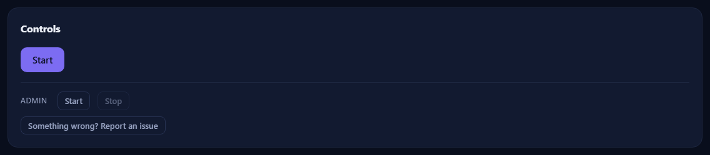

Reporting an issue

Something broken, confusing, or simply worse than it should be? Say so — a good report is the fastest route to a fix, and GameKeepr makes one easy without ever collecting anything behind your back.
Where the button lives
- On every server's page, at the bottom of the Controls card: Something wrong? Report an issue. This is the one to use when the problem belongs to a server — it prefills that server's context.
- Under Settings → Anonymous usage statistics, for portal-wide problems.
Both open a GitHub issue form, prefilled — you need a (free) GitHub account to submit it.
What gets prefilled, and what never does
The per-server button fills in the sanitised technical context a useful bug report opens with:
- the GameKeepr version and platform,
- how many servers the portal watches and which games (names of games, never names of servers),
- for the server you came from: its game, its container state (with exit code and uptime), its update strategy, and the Steam build comparison when known.
Never prefilled: your server names, addresses, ports, passwords, player names, or anything from the logs. And nothing is sent silently — the entire body sits in GitHub's form, editable, until you press submit. Paste log lines yourself if they help, after checking them for anything private.
What makes a report land well
- Say what you expected and what happened instead; a screenshot of the card or log line usually says more than a paragraph.
- One problem per issue — two bugs in one report means one gets lost.
- The portal's own activity feed often has the honest outcome line (success / unconfirmed / failed, with its reason); quoting it helps enormously.